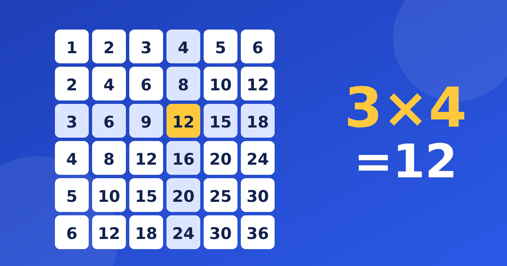

Что такое таблица Пифагора и как объяснить её ребёнку

Таблица Пифагора для детей выглядит как квадрат из чисел. Сверху и слева стоят множители, а внутри клеток записаны произведения. Если один раз спокойно разобрать, как она устроена, у ребёнка появится карта всей таблицы умножения на одном листе. Ниже рассказываем, как её читать, что в ней можно заметить и как использовать вместе с тренировкой.
Из чего состоит квадрат
Чаще всего это девять или десять строк и столько же столбцов. В первой строке и в первом столбце записаны числа по порядку, начиная с единицы. Все остальные клетки заполнены результатами умножения. Таблица Пифагора — это просто аккуратная запись всех примеров в одном месте, а не новая тема, которую нужно учить отдельно.
Полезно сначала дать ребёнку рассмотреть её без заданий. Пусть он сам скажет, что замечает. Обычно дети быстро находят, что числа в клетках растут слева направо и сверху вниз.
Название пришло из истории. Таблицу связывают с именем древнегреческого учёного, но для ребёнка это просто имя квадрата. Если ему интересно, можно вместе прочитать короткую справку, однако обязательной частью занятия это не станет.
Как пользоваться таблицей Пифагора
Покажите на одном примере. Нужно найти, сколько будет 6 × 7. Порядок действий простой.
- Найдите число 6 в левом столбце и число 7 в верхней строке.
- Проведите пальцем вправо от шестёрки и вниз от семёрки.
- В клетке, где пальцы встретились, стоит ответ, то есть 42.
- Проверьте себя обратным ходом. Найдите 7 слева и 6 сверху, и вы придёте в ту же клетку.
Через несколько таких поисков ребёнок перестаёт водить пальцем и начинает угадывать место клетки на глаз. Это хороший знак, но торопить его не нужно.
Что видно в таблице, если присмотреться
Главная ценность квадрата в том, что он показывает закономерности. Вот несколько, которые легко найти вместе.
- По диагонали от верхнего левого угла стоят квадраты чисел, то есть 1, 4, 9, 16, 25, 36, 49, 64 и 81.
- Таблица симметрична относительно этой диагонали. Клетка 3 × 8 и клетка 8 × 3 содержат одно и то же число 24.
- В строке двоек все числа чётные, а в строке пятёрок они оканчиваются на 0 или на 5.
- В столбце девяток сумма цифр каждого ответа равна девяти, например 4 × 9 = 36, а 3 + 6 = 9.
Симметрия объясняется тем, что множители можно менять местами. Подробнее об этом мы писали в статье про переместительное свойство умножения, а секреты девяток разобраны в материале про таблицу умножения на 9.
Чем квадрат помогает, а чем нет
Честно скажем, что сама по себе картинка ничего не запоминает за ребёнка. Она помогает увидеть связи, проверить ответ и понять, что примеров на самом деле меньше, чем кажется. Но чтобы отвечать быстро, нужны повторения. Об общем подходе к запоминанию можно прочитать в статье как выучить таблицу умножения.
Если ребёнок только смотрит на готовые ответы, он может привыкнуть подглядывать. Поэтому подсказкой лучше пользоваться как страховкой, а не как основным способом.
С какого класса начинать
Знакомить с квадратом можно, когда ребёнок уже умножает на 2, 3 и 5 и понимает, что такое умножение. Для первоклассников хватит маленького квадрата, где пять строк и пять столбцов. Второклассники и третьеклассники работают с полным листом. Четвероклассникам он чаще нужен как напоминание, где остались пробелы.
Хорошо работает такой приём. Ребёнок берёт цветной карандаш и отмечает клетки, ответы в которых помнит без подсказки. Через неделю становится видно, где остались светлые пятна. Это честная картина, и с ней проще планировать занятия, чем с общим ощущением, что он плохо знает таблицу.
Как использовать квадрат дома
Начните с печатного листа. В тренажёре есть печатная таблица, а кнопка «Показать визуально» помогает увидеть пример в картинках. Часть возможностей бесплатна, таймеров на вопросах и рекламы нет, поэтому ребёнок не спешит и не отвлекается.
Несколько простых идей на неделю.
- Закрывайте листочком одну строку и просите назвать числа по памяти, затем сверяйтесь.
- Раскрашивайте клетки с одинаковыми ответами, например с числом 24 или 36. Их окажется несколько.
- Играйте в «найди клетку». Вы называете число, ребёнок ищет, какими множителями оно получается.
Для самостоятельной работы можно сделать карточки с примерами, а сам лист при необходимости распечатать и повесить над столом. Занимайтесь недолго и регулярно, а ошибки воспринимайте как обычную часть обучения.